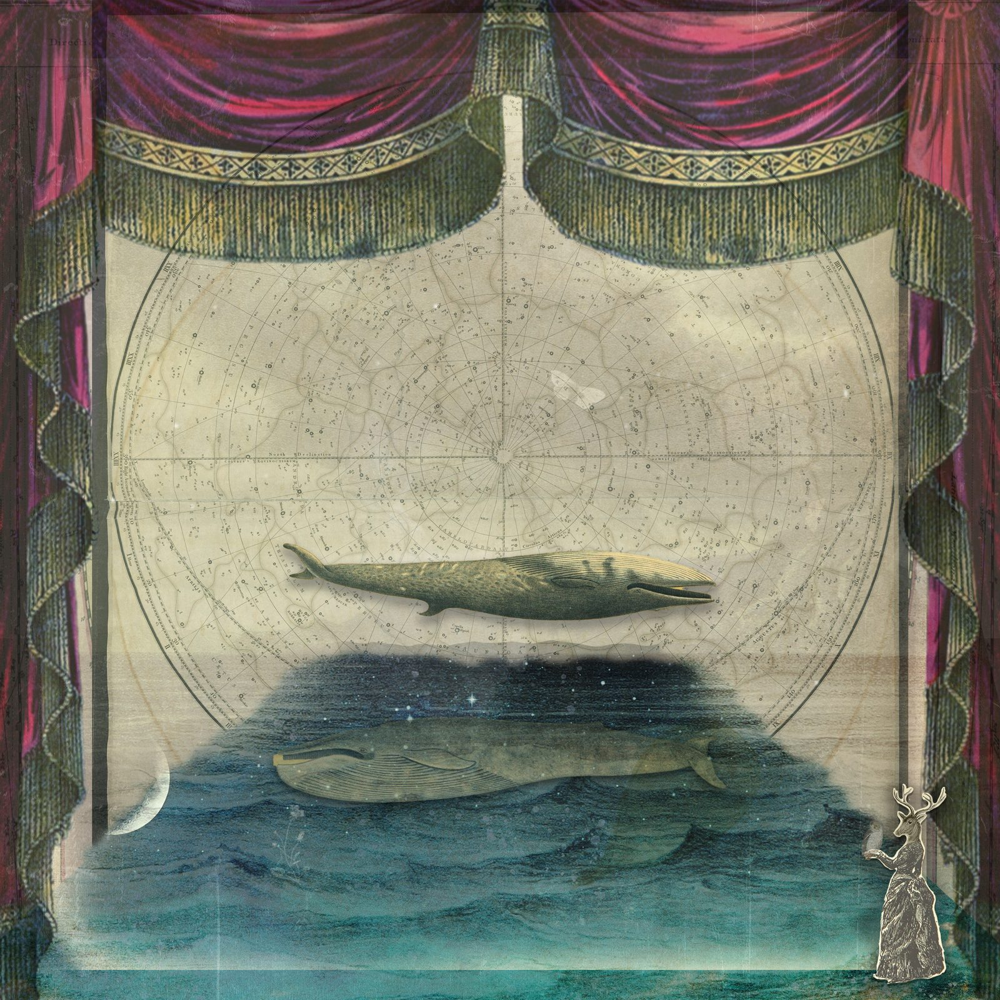

The Ministry of Small Injustices uses minke whales and the pantoum to solve cold tea

- Problem (chosen)
- Cold tea
- Creature (dealt)
- Minke whale
- Form (dealt)
- Pantoum
Cold tea occurs because people believe tea begins when the kettle boils and ends when the cup is empty. The Ministry has found no evidence to validate this belief.
Minke whales move through cold water while maintaining a body temperature considerably warmer than the sea around them. They achieve this partly through insulation, and partly by controlling the movement of heat through the body. Their extremities may cool while heat is retained where it matters. A cup of tea gives its heat indiscriminately to the kitchen.
The Department of Cetacean Beverages therefore proposes that tea pouring should be monitored.
Four mouthfuls are poured first. After the second mouthful is drunk, the remaining tea becomes the first mouthful of the next serving. Hotter tea is then added, maintaining a warmer temperature than the kitchen. No serving is permitted to become entirely cold.
The cup thus behaves less like a container and more like a migrating whale: conserving warmth by moving it repeatedly towards the centre of the cup.
Risks. A person working from home may discover on Thursday that they are still drinking Tuesday’s tea. Repeated reheating could result in the gradual accumulation of tannins, milk, and administrative resentment. One participant in a trial attempted to apply the system to coffee. The Ministry has referred the matter to Ethics.
The mug retains what warmth it can.
The kettle begins again in the kitchen.
Nothing is required to begin again.
The tea is warm enough to drink.